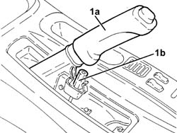
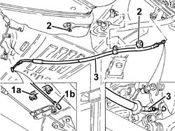

3330A30 handbrake cable - r+r
- Path
- Procedures > 33 BRAKING SYSTEM > 3380 HANDBRAKE > 3380A handbrake control and linkage > 3330A30 handbrake cable - r+r
- Kind
- repair procedure (removal / refitting; the operation number is the code)
- Applies to
- all engines; all production periods
- Interactive page
- https://sloeber94.github.io/elrnDB-a156/en/#/3238115
Applies to: all engines; all production periods
 Removing
Removing
 Refitting
RefittingPlace the car on the lifting bridge.
4450B11 WHEEL (one) rear - R.R.
Remove handbrake guard.
1. Lift handbrake lever (1a) and unloose handbrake cable tension nut (1b).

Applies to: all engines; all production periods
Lift the car.
1. Remove pin (1a) and disconnect handbrake control cable (1b).
2. Disconnect handbrake control cable from middling clamps.
3. Disconnect handbrake control cable from front brake caliper and remove it together with guard.

Applies to: all engines; all production periods
Refitting
RemovingPlace handbrake control cable back in its seat and connect it to rear brake caliper and to middling clamps.
Connect handbrake control cable to connection tie rod to handbrake lever and block it with its clamp.
Lower the car.
3380A04 handbrake - check travel
Mount handbrake guard.
4450B11 WHEEL (one) rear - R.R.
Take the car off the lifting bridge.